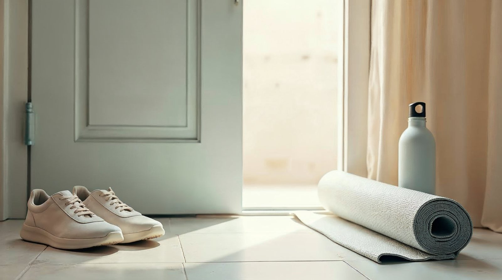
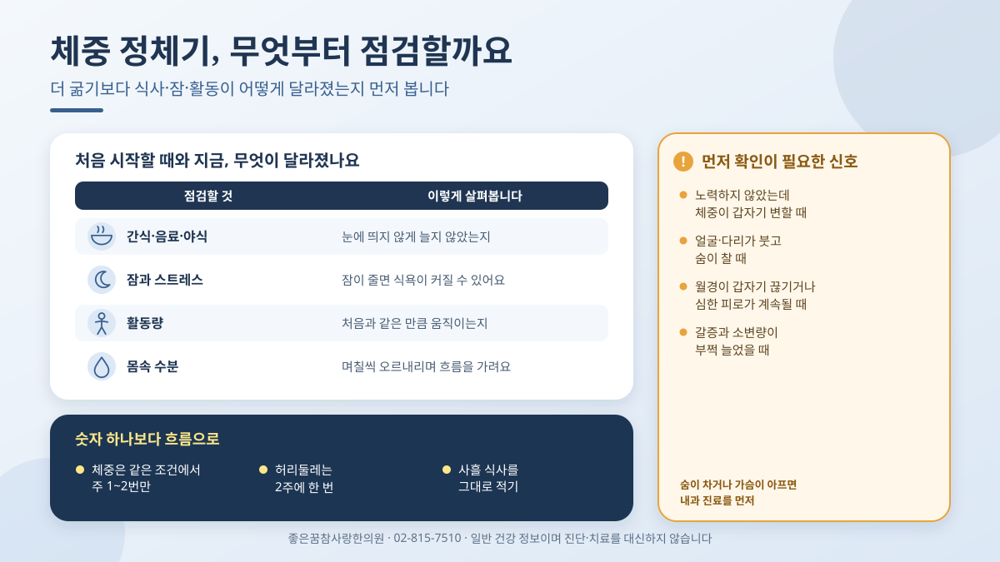

이종호 한의사 감수좋은꿈참사랑한의원 대표원장 (한의사 면허번호 19769)발행 2026-11-23 · 수정 2026-11-27
이 글의 차례
- 왜 이런 불편이 생길 수 있나요
- 먼저 이렇게 여쭙니다
- 일상에서 먼저 해 볼 수 있는 것
- 정체기와 실패는 어떻게 다른가요?
- 왜 더 굶으면 오히려 멈출까요?
- 숫자 말고 이것도 같이 보세요
- 예를 들어 이런 경우가 있습니다
- 스스로 점검해 보세요
- 자주 하는 오해
- 처음 오시면 이런 순서로 진료합니다
- 얼마나 지켜보고 언제 상담할까요
- 몸이 보내는 신호로 나눠 봐요
- 외식이나 회식이 있는 날
- 마음이 지칠 때
- 잠이 체중에 주는 영향
- 붓기와 체중은 구분해서 봐요
- 먹는 속도도 한 번 보세요
- 처음과 지금을 나란히 놓고 보세요
- 한의원에서 함께 살필 수 있는 경우
- 제가 할 일과 부탁드릴 한 가지
- 이렇게 기록해 오시면 상담이 쉬워집니다
- 이런 증상은 먼저 확인이 필요합니다
- 관련 글
처음 몇 주는 잘 줄던 체중이 어느 순간 멈추는 일은 흔합니다. 정체기에는 더 굶기보다 처음 시작할 때와 지금의 식사·잠·활동이 어떻게 달라졌는지부터 점검하는 것이 먼저입니다. 체중계 숫자가 그대로여도 허리둘레나 몸의 가벼움은 달라지고 있을 수 있습니다.
왜 이런 불편이 생길 수 있나요
- 체중이 줄면 같은 활동을 해도 쓰는 에너지가 조금씩 줄어, 처음과 같은 방법으로는 변화가 더뎌질 수 있습니다.
- 처음의 각오가 느슨해지면서 간식·음료·야식이 눈에 띄지 않게 늘어나는 경우가 많습니다.
- 잠이 부족하거나 스트레스가 쌓이면 식욕이 커지고 몸이 무겁게 느껴질 수 있습니다.
- 몸속 수분이 며칠씩 오르내리면서 실제 흐름을 가리기도 합니다.
- 새로 먹기 시작한 약이 체중과 관련된 경우도 있어 함께 확인합니다.
먼저 이렇게 여쭙니다
- 체중이 언제부터 멈췄나요? 처음과 비교해 식사량과 활동은 같은가요?
- 하루 몇 시간 주무시고, 최근 스트레스가 늘었나요?
- 간식, 단 음료, 야식, 음주는 어떤가요?
- 최근 새로 먹기 시작한 약이 있나요?
- 체중 말고 허리둘레나 옷 맞음새는 어떤가요?
일상에서 먼저 해 볼 수 있는 것
- 사흘 정도 먹은 것과 시간을 그대로 적어 보기
- 체중은 아침 화장실 다녀온 뒤 같은 조건에서 일주일에 한두 번만 재기
- 허리둘레를 2주에 한 번 같은 위치에서 재 숫자 대신 흐름 보기
- 걷기 시간을 하루 10분씩 나눠서라도 늘리기
- 잠드는 시각을 30분 앞당겨 수면 시간 확보하기
정체기와 실패는 어떻게 다른가요?
체중계 숫자가 2주째 그대로면 "이제 안 되나 봐요" 하는 분들이 많아요. 그런데 그러니까 사실은, 정체기는 실패가 아니라 원래 오는 거예요. 체중이 줄면 몸이 쓰는 에너지도 같이 줄어서 같은 방법으로는 변화가 더뎌지는 게 정상이거든요.
정체기와 실패는 두 개가 다른 얘기예요. 실패라면 허리둘레도, 옷 맞음새도, 몸의 무거움도 처음으로 돌아가겠죠. 정체기라면 숫자는 멈춰 있어도 허리띠 구멍이 하나 줄었거나, 계단이 덜 힘들거나, 붓기가 덜한 변화가 같이 있는 경우가 많아요.
그래서 저는 체중 하나만 보지 않고 허리둘레와 몸이 느끼는 변화를 같이 여쭤봐요. 필요하다고 판단되면 인바디로 근육과 체지방이 어떻게 움직였는지도 함께 보고요.
왜 더 굶으면 오히려 멈출까요?
정체기가 오면 가장 먼저 저녁을 굶는 분들이 많아요. 그런데 이게 재밌는 게 뭐냐 하면요, 굶을수록 몸은 더 꽉 쥐려고 한다는 거예요.
저는 이걸 월급날에 자주 비유해요. 회사가 "이번 달 월급은 1일에서 15일 사이에 줄게" 하면 직원들이 돈을 편하게 못 쓰잖아요. 아껴 두고 모아 두죠. 몸도 그래요. 언제 먹을지 예측이 안 되면 들어온 걸 쓰기보다 지방으로 저장하는 쪽으로 기울기 쉬운 거예요.
그래서 저는 양을 확 줄이는 것보다 공백을 일정하게 두는 걸 먼저 봐요. 공백이 제일 중요해요, 공백이. 끼니 사이 간격이 매일 비슷하면 몸이 "또 들어오겠구나" 하고 덜 쥐고 있는 경우가 많거든요.
굶었다가 몰아 먹는 날이 반복되면 마음도 지쳐요. 그건 의지가 약해서가 아니라 사람이 원래 그래요. 배가 너무 고프면 누구나 많이 먹게 되거든요.
숫자 말고 이것도 같이 보세요
- 아침 같은 조건에서 잰 체중의 2주 흐름(하루하루가 아니라)
- 같은 위치에서 잰 허리둘레
- 즐겨 입는 바지의 허리 맞음새
- 오후에 몸이 처지는 정도와 저녁 붓기
- 잠든 시각과 아침에 일어날 때의 개운함
체중은 몸속 수분 때문에 하루 이틀 사이에도 오르내려요. 짜게 먹은 다음 날, 생리 전, 잠을 설친 다음 날엔 숫자가 올라가기도 하고요. 그래서 매일 재고 일희일비하기보다 같은 요일, 같은 조건에서 일주일에 한두 번 재는 쪽을 권해요.
예를 들어 이런 경우가 있습니다
예를 들어 처음 한 달은 저녁을 일찍 먹었는데 요즘 야근이 늘면서 저녁이 다시 밤 9시 넘어 밀린 경우가 있어요. 식사량은 같아도 먹는 시각이 바뀐 거라, 먹는 양보다 시각을 먼저 되돌려 보는 게 출발점이 될 수 있어요.
예를 들어 운동량은 늘었는데 "운동했으니까" 하고 간식이나 음료를 더 드시는 경우도 있어요. 운동 뒤에 마시는 단 음료 한 병이 생각보다 커요. 운동을 줄이라는 게 아니라, 운동 뒤에 무엇을 드시는지만 한번 적어 보시면 돼요.
예를 들어 체중은 그대로인데 잠이 줄고 스트레스가 많은 시기라면, 숫자를 더 몰아붙이기보다 잠부터 챙기는 게 먼저일 수 있어요. 잠이 모자라면 식욕이 커지고 단 것이 당기는 경우가 많거든요.
스스로 점검해 보세요
- 처음 시작할 때보다 저녁 먹는 시각이 늦어졌다
- 끼니 사이 간격이 날마다 들쭉날쭉하다
- 배가 고프지 않은데 습관처럼 '먹어주는' 간식이 있다
- 운동한 날 단 음료나 간식이 늘었다
- 하루 6시간보다 적게 자는 날이 많다
- 체중을 하루에도 여러 번 잰다
- 최근 새로 먹기 시작한 약이나 영양제가 있다
해당하는 게 많다고 걱정하실 필요는 없어요. 그중 제일 쉬운 하나만 골라서 2주쯤 해 보시면 돼요.
자주 하는 오해
- 정체기가 오면 운동량을 확 늘려야 한다고 여기기 쉬워요. 갑자기 세게 하면 식욕이 같이 커지고 몸이 지쳐서 오래가기 어려워요. 약하게, 오래, 자주 하는 쪽이 더 이어 가기 쉬워요.
- 물을 마셔도 살이 찐다고 물을 참는 분이 계세요. 체중계에 잠깐 반영될 뿐 물은 살이 아니에요. 오히려 물이 모자라면 배고픔과 목마름을 헷갈려 더 먹게 되기도 해요.
- 한 끼를 굶으면 그만큼 빠진다고 생각하기 쉬워요. 굶은 다음 끼니에 몰아 먹게 되는 경우가 많아서 하루 전체로 보면 별 차이가 없거나 오히려 늘기도 해요.
- 정체기가 길면 몸이 이상한 거라고 걱정하시는 분도 있어요. 대부분은 몸이 바뀐 체중에 적응하는 과정이에요. 다만 노력과 상관없이 체중이 갑자기 변했다면 아래 안내를 먼저 보세요.
처음 오시면 이런 순서로 진료합니다
첫 방문에서는 모든 분께 그렇듯 맥부터 짚고, 지금까지 해 온 방법과 언제부터 멈췄는지, 그사이 생활에서 달라진 게 무엇인지 차례로 여쭤요. 식사 시각과 잠, 스트레스, 복용 중인 약도 함께 확인해요.
필요하다고 판단되면 인바디 770으로 체수분·근육량·체지방을 재고, 검진 결과가 오래됐거나 혈당이 걱정된다면 원내 혈액 검사기나 당화혈색소 검사기로 지금의 흐름을 함께 볼 수 있어요. 설진·복진으로 붓기와 소화 상태도 살펴요.
그 뒤 먼저 바꿀 한 가지와 침·한약 상담을 정하고, 다음 진료에서는 그 한 가지를 어떻게 지내셨는지 이어서 여쭤요. 숫자가 그대로였더라도 몸이 느낀 변화를 같이 적어 오시면 다음 걸음을 정하기 쉬워요.
얼마나 지켜보고 언제 상담할까요
- 식사 시각과 간격을 바꾼 뒤에는 최소 2~4주는 이어 가며 체중과 허리둘레의 흐름을 보세요.
- 2주 넘게 체중이 멈췄더라도 허리둘레나 몸의 가벼움이 달라지고 있다면 방법을 크게 바꾸지 않아도 괜찮아요.
- 혼자 여러 방법을 바꿔 봐도 한두 달째 흐름이 그대로이거나, 먹는 것 때문에 마음이 많이 지친다면 상담을 받아 보세요.
몸이 보내는 신호로 나눠 봐요
정체기라도 몸에서 느끼는 모습은 사람마다 달라요. 저는 이걸 몇 가지로 나눠서 봐요.
- 붓는 쪽: 아침엔 얼굴이, 저녁엔 다리가 붓고 반지가 빡빡해져요. 짠 음식과 물 흐름, 오래 앉아 있는 습관을 같이 봐요.
- 소화가 지친 쪽: 조금만 먹어도 더부룩하고 트림이 잦고, 식후에 졸려요. 먹는 속도와 끼니 간격을 먼저 봐요.
- 피로가 쌓인 쪽: 잠을 자도 개운하지 않고 오후에 단 것이 당겨요. 잠과 스트레스를 먼저 챙겨요.
- 몸이 찬 쪽: 손발이 차고 추위를 많이 타며 움직이기가 귀찮아요. 몸을 덥히는 쪽으로 생활을 조금씩 바꿔 봐요.
한 가지만 있는 분보다 섞여 있는 분이 많아요. 어느 쪽에 가까운지에 따라 침 자리와 한약 상담의 방향, 먼저 부탁드릴 습관이 달라져요.
외식이나 회식이 있는 날
정체기에 회식이 잡히면 그 주를 포기하고 싶어지죠. 그럴 필요 없어요. 하루 많이 먹었다고 흐름이 다 무너지는 건 아니에요.
회식 날은 그 전 끼니를 굶지 말고 평소처럼 드세요. 굶고 가면 자리에서 더 많이 먹게 되거든요. 자리에서는 채소와 단백질을 먼저 드시고, 마무리 밥이나 면은 한 번 건너뛰어 보세요. 다음 날은 평소 시각에 평소처럼 드시면 돼요. 다음 날 굶어서 메우려고 하면 공백이 또 흔들리거든요.
마음이 지칠 때
정체기가 길어지면 몸보다 마음이 먼저 지쳐요. "이렇게 해도 안 되면 뭘 해야 하나" 싶은 마음이 들면, 그때가 바로 혼자 애쓰기보다 같이 보는 게 필요한 때예요.
먹는 것 때문에 죄책감이 들거나, 먹고 나서 몰래 토하거나, 며칠씩 굶게 된다면 그건 체중보다 마음을 먼저 살펴야 하는 신호일 수 있어요. 그럴 때는 혼자 두지 마시고 진료실에서 그 이야기도 편하게 꺼내 주세요.
잠이 체중에 주는 영향
잠이 모자란 날 유독 배가 고프고 단 것이 당긴 적 있으시죠? 원래 그래요. 잠이 부족하면 식욕이 커지고 배부른 느낌은 늦게 오는 경향이 있거든요. 그래서 정체기에 식단만 붙잡고 있기보다 잠을 먼저 챙기는 게 도움이 되는 경우가 많아요.
잠드는 시각을 한 번에 확 당기기보다 15분씩 앞당겨 보세요. 늦은 밤 깨어 있는 시간이 줄면 야식을 찾게 되는 시간도 같이 줄어요. 잠이 보약이라는 말이 체중에도 그대로 통하는 거예요.
붓기와 체중은 구분해서 봐요
정체기라고 오시는 분들 중에 사실은 붓기 때문에 숫자가 안 줄어 보이는 경우도 있어요. 짜게 먹은 다음 날, 오래 서 있거나 앉아 있던 날, 생리 전에는 몸에 물이 머물러서 체중이 하루 이틀 사이에 꽤 오르내리거든요.
이럴 때 체중만 보고 더 굶으면 몸만 지쳐요. 저녁 국물을 줄이고, 오래 앉아 있었다면 틈틈이 일어나 걷고, 다리를 잠깐 올려 쉬는 것처럼 물 흐름을 돕는 쪽을 먼저 해 보세요. 붓기가 빠지면서 멈춰 있던 숫자가 다시 움직이는 경우도 있어요.
먹는 속도도 한 번 보세요
정체기에 식사량은 같은데 먹는 속도가 빨라진 분들이 있어요. 바쁜 날 10분 만에 한 끼를 끝내면 배부르다는 신호가 오기 전에 이미 많이 먹은 뒤예요. 숟가락을 한 번씩 내려놓고 천천히 씹어 보세요. 같은 양이어도 배부른 느낌이 일찍 와서 더 먹고 싶은 마음이 줄어드는 경우가 많아요.
혼자 휴대폰을 보며 먹으면 얼마나 먹었는지 모르고 지나가기도 해요. 한 끼만이라도 화면을 내려놓고 먹는 데 집중해 보세요. 그것만으로도 '먹어주는' 양이 줄어드는 분들이 있어요.
처음과 지금을 나란히 놓고 보세요
정체기에는 처음 시작할 때 무엇을 했는지 다시 떠올려 보는 게 도움이 돼요. 그때 지켰던 것 중 지금 슬그머니 빠진 게 무엇인지 찾아보는 거예요. 저녁 시각, 간식, 걷기, 잠 중에 하나쯤은 처음과 달라져 있는 경우가 많거든요. 새로운 방법을 찾기보다 빠진 하나를 되찾는 게 더 쉬운 길일 때가 많아요.

한의원에서 함께 살필 수 있는 경우
- 식단과 활동을 바꿨는데 체중이 한동안 멈춰 있는 경우 식사 리듬과 활동량, 수면을 함께 살핍니다.
- 붓기나 피로감으로 몸이 무겁게 느껴지는 경우 순환과 생활 습관을 살핍니다.
- 식욕이 들쭉날쭉해 조절이 어려운 경우 식사 간격과 잠의 질을 함께 살핍니다.
좋은꿈참사랑한의원에서는 모든 분의 맥을 먼저 짚고, 지금까지 해 온 방법과 어려웠던 점을 충분히 듣습니다. 필요하다고 판단될 때 인바디 770으로 체수분·근육량·체지방을 함께 재 숫자 하나가 아닌 몸의 구성을 봅니다.
설진·복진으로 몸 상태도 살핀 뒤 생활 계획과 침·한약 상담 등을 상태에 맞춰 정하고, 귀가 전에는 집에서 지켜볼 점과 다음에 확인할 일을 알려 드립니다.
제가 할 일과 부탁드릴 한 가지
맥을 짚고 몸의 구성과 붓기, 잠과 소화를 같이 본 뒤 생활 계획과 침·한약 상담을 정하는 건 제가 할게요. 한약은 드시는 약을 모두 확인한 뒤에 정하고, 먹다가 속이 불편하거나 평소와 다른 느낌이 들면 복용을 멈추고 연락해 주세요.
부탁은 딱 하나예요. "배가 안 고프면 드시지 마세요." 크림빵도 배고플 때 하나 먹는 것과 배부를 때 하나 더 먹는 것은 몸에서 완전히 다르게 받거든요. 다른 건 하시던 대로 편하게 하셔도 괜찮아요.
저도 체중과 계속 씨름하고 있어요. 이 싸움은 계속 가는 거예요. 그래서 한 번에 크게 빼는 것보다 다시 찌지 않는 습관 하나를 가져가시는 게 더 중요하다고 생각해요. 보통 한 달쯤 보고 다음 걸음을 같이 정해요.
이렇게 기록해 오시면 상담이 쉬워집니다
- 시작 시점과 지금까지의 체중·허리둘레 변화
- 최근 일주일의 식사 시간과 간식·음료
- 잠드는 시각과 일어나는 시각
- 복용 중인 약과 영양제, 최근 건강검진 결과지
이런 증상은 먼저 확인이 필요합니다
- 노력하지 않았는데 체중이 갑자기 줄거나 늘어난 경우
- 얼굴과 다리가 붓고 숨이 찬 경우
이런 신호가 있으면 한의원보다 가까운 병원이나 응급실을 먼저 찾으세요.
관련 글

여쭙는 것
- 체중이 언제부터 멈췄나요? 처음과 비교해 식사량과 활동은 같은가요?
- 하루 몇 시간 주무시고, 최근 스트레스가 늘었나요?
- 간식, 단 음료, 야식, 음주는 어떤가요?
생활에서 해 볼 것
- 사흘 정도 먹은 것과 시간을 그대로 적어 보기
- 체중은 아침 화장실 다녀온 뒤 같은 조건에서 일주일에 한두 번만 재기
- 허리둘레를 2주에 한 번 같은 위치에서 재 숫자 대신 흐름 보기
한의원에서 함께 살필 것
- 식단과 활동을 바꿨는데 체중이 한동안 멈춰 있는 경우 식사 리듬과 활동량, 수면을…
- 붓기나 피로감으로 몸이 무겁게 느껴지는 경우 순환과 생활 습관을 살핍니다.
- 식욕이 들쭉날쭉해 조절이 어려운 경우 식사 간격과 잠의 질을 함께 살핍니다.
먼저 확인이 필요한 신호
- 노력하지 않았는데 체중이 갑자기 줄거나 늘어난 경우
- 얼굴과 다리가 붓고 숨이 찬 경우
한눈에 보는 표
| 구분 | 핵심 |
|---|---|
| 여쭙는 것 | 체중이 언제부터 멈췄나요? 처음과 비교해 식사량과 활동은 같은가요? 하루 몇 시간 주무시고, 최근 스트레스가 늘었나요? |
| 생활에서 해 볼 것 | 사흘 정도 먹은 것과 시간을 그대로 적어 보기 체중은 아침 화장실 다녀온 뒤 같은 조건에서 일주일에 한두 번만 재기 |
| 한의원에서 함께 살필 것 | 식단과 활동을 바꿨는데 체중이 한동안 멈춰 있는 경우 식사 리듬과 활동량, 수면을 함께 살핍니다. 붓기나 피로감으로 몸이 무겁게 느껴지는 경우 순환과 생활 습관을 살핍니다. |
| 먼저 확인이 필요한 신호 | 노력하지 않았는데 체중이 갑자기 줄거나 늘어난 경우 얼굴과 다리가 붓고 숨이 찬 경우 |
자주 묻는 질문
정체기는 왜 생기나요?
줄어든 체중만큼 쓰는 에너지가 달라지고 식사·잠·활동이 처음과 조금씩 달라지는 등 여러 요인이 겹칩니다. 숫자보다 생활의 변화를 먼저 점검합니다.
더 굶어야 하나요?
무리한 절식은 권하지 않습니다. 오히려 몰아 먹기로 이어지기 쉬워 식사 간격과 구성을 먼저 살핍니다.
인바디 검사는 꼭 받아야 하나요?
필수는 아닙니다. 체중이 멈췄을 때 근육량과 체지방이 어떻게 달라졌는지 함께 볼 필요가 있다고 판단되면 그때 확인합니다.
먹고 있는 약이 체중과 관련 있을까요?
약 이름을 알려 주시면 함께 확인합니다. 약은 임의로 끊거나 줄이지 말고 처방한 의사와 상의하세요.
좋은꿈참사랑한의원은 재진 때 지난번 이야기부터 이어서 여쭙니다. 진료시간과 예약은 오시는 길에서 확인하세요.
어디서 상담받을 수 있나요?
좋은꿈참사랑한의원은 서울 동작구 만양로2길 2 신성빌딩 3층·5층(서울 동작구 상도동, 7호선 상도역 3번 출구 근처)에 있습니다. 한의사 3명(이종호 대표원장, 조영기 수석진료원장, 정원영 진료원장)이 진료합니다. 진료시간은 평일 09:30~20:00(점심 13:00~14:00), 토·일·공휴일 09:30~15:00이며, 방문 전 전화로 확인을 권합니다. 예약은 네이버 예약, 카카오톡 상담, 전화 02-815-7510로 받습니다.
이 글은 일반적인 건강 정보이며 개인의 진단이나 치료를 대신하지 않습니다. 증상이 있거나 복용 중인 약이 있다면 진료를 통해 확인하세요. 치료 효과는 개인마다 다를 수 있습니다.
작성 기준: 일반적으로 알려져 있는 건강 정보를 참고해 정리했습니다(대표원장 감수). 증상 기록은 1~2주 동안 하루 1회, 비슷한 시간에 적어 오시면 지난 상태와 비교하기 쉽습니다.